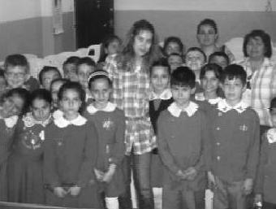

Seminer sonunda huzura kavuşuyorum, çünkü bilgimin zekâtını vermiş ve insanların hayatlarına dokunmuş oluyorum. Bir mahkûmun bana "Hayatım benim kelebeğimi öldürdü, artık sizle yeniden canlandıracağım" demesi her şeyin karşılığıydı. TUP bir hayat felsefesi bence. (Tuğba Bademci)
Seminer canavarı. En çok seminer veren uğur böceklerimizden biri. Şimdi de uğur böceklerine eğitimler vermeye başladı. Girişken, pozitif, enerji dolu bir genç. Öğrencileri Tuğba gibi bir öğretmenleri olduğu için şanslı.